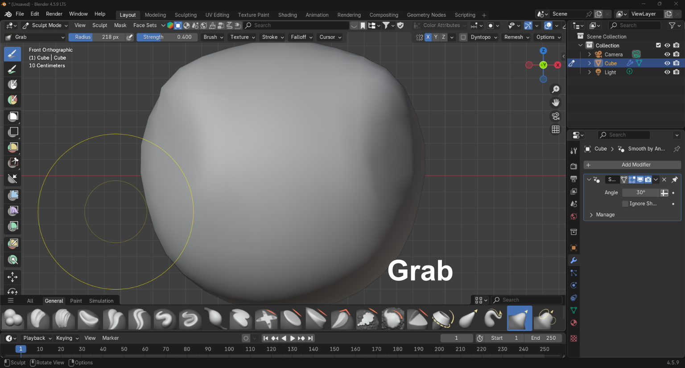
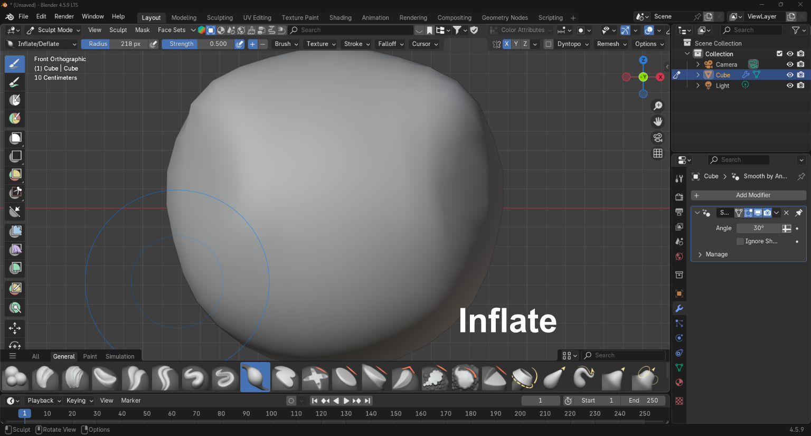
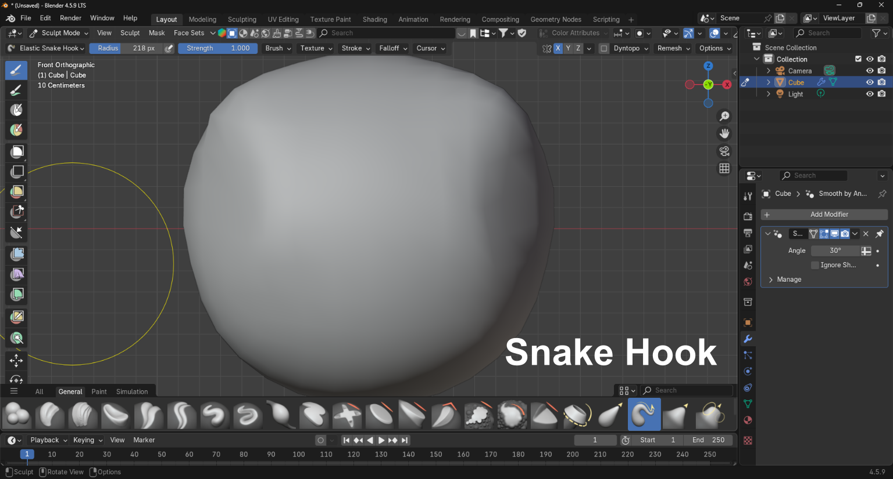

Brocha Grab
"Mueve los vértices junto con el mouse. Un pincel esencial para construir formas y ajustar proporciones."

Brocha Inflate
Mueve la malla en múltiples direcciones. Es útil para inflar o contraer superficies y volúmenes.

Brocha Snake
Similar a Elastic Grab, pero rota la geometría afectada según la dirección del trazo.
Referencias: